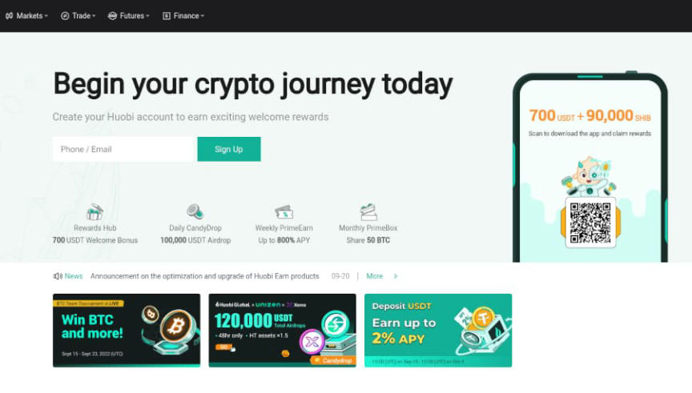
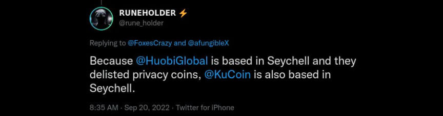
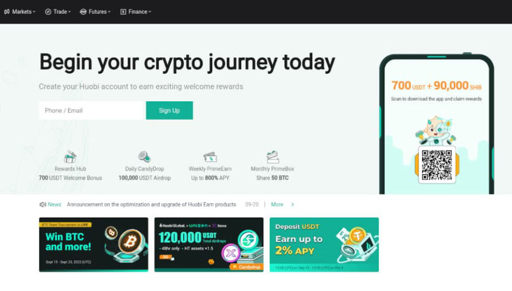
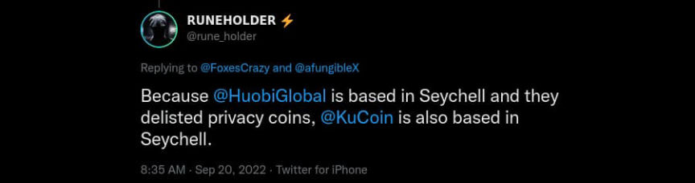

Huobi Allegedly Deslisted Privacy Coins
~4 min read | Published on 2022-09-20, tagged Delisted, Exchange, General-News, Monero using 854 words.
The cryptocurrency exchange Huobi has seemingly delisted Monero and other privacy coins just two months after legally entering the U.S. market.
There does not seem to be any official confirmation of this. Pymnts.com wrote:
“While the Seychelles-based exchange founded in China hasn’t said that the delistings were a condition of the license, in a Chinese-language statement last week, it called the move “progress in the compliance process … creating a good compliance foundation for the company to carry out digital currency-related business in the United States in the future.”
“In the English announcement of the delisting, it merely said the move was “in compliance with the latest financial regulations.” Huobi’s actions affected the three largest privacy coins, Monero (XMR), Zcash (ZEC) and Dash (DASH), as well as Firo (FIRO), Decred (DCR), Verge (XVG) and Horizen (ZEN).”
Not all of those cryptocurrencies belong in a list of privacy coins…

The company’s announcement linked in the Pymnts blog post is about the FinCEN licensing, [em]not[/em] about delisting privacy coins. However, it does indicate that the company plans to make steps towards global compliance, implementing KYC and AML measures, etc.
The announcement (translated via DeepL):
FireCoin Technology Holdings Limited (“FireCoin Technology”, stock code: 1611.HK) is pleased to announce that its subsidiary HBIT INC has successfully obtained the Money Services Business Registration (MSB) license issued by the Financial Crimes Enforcement Bureau (FinCEN) in the United States. This is another step forward in the compliance process of HBIT, creating a good compliance foundation for the company’s future digital currency related business in the U.S., thus further realizing the strategic goal of globalization and compliance.
From the enactment of laws to the classification of regulation, European and American countries have a clear regulation of digital currency. Among them, the United States has highlighted the imagination of the speed of regulatory development and driven the orderly development of digital assets. After receiving this license, the Brokerage business of FireCoin Technology can conduct foreign exchange (Dealer in Foreign Exchange) and money transfer (Money Transmitter) business activities throughout the United States. In the future, it is expected to further provide secure and compliant digital asset services to users in the United States and strengthen the momentum of international business expansion.
FireCoin Technology has been adhering to the development concept of “security” and “compliance” to continuously build and improve a one-stop digital asset service platform for the entry of traditional finance. Its Brokerage business continues to provide high quality professional services to institutions and high net worth individual users, and through perfect anti-money laundering, KYC and other standards and risk control system, to establish sufficient asset security for users. Since the launch of the business in November 2021, the transaction volume of Brokerage business has exceeded USD 430 million.
As a leading digital asset service platform in the industry, FireCoin Technology’s subsidiary has obtained MSB registration license, which will further empower the development of the company’s virtual asset ecosystem. In the future, FireCoin Technology hopes to promote the compliance and mainstreaming process of the whole industry with the company’s own actions.
Up to now, the subsidiary of FireCoin Technology has obtained the Class 4 (advising on securities) and Class 9 (providing asset management) licenses from the Hong Kong Securities and Futures Commission and can manage a portfolio of investments in 100% virtual assets; registered as a trust company in Hong Kong and holds a trust or company service provider (TCSP) license. At the same time, the subsidiary is actively applying for Class 1 (dealing in securities) and Class 7 (providing automated trading services) licenses issued by the Hong Kong Securities and Futures Commission with a view to operating in Hong Kong as a virtual asset trading platform in compliance.
A Twitter user (one of the few among the sea of bots that appear in a search for “Huobi” on the platform) suggested that Seychelles, where Huobi is located, is taking some action against piracy coins. This seems unlikely unless the country is being bullied by the United Nations.

If I were a Western government (the U.S. and proxies), I would refuse to license any exchange that permitted users to exchange privacy coins. Then I would:[list]*Use federal assets to “launder” cryptocurrency through the remaining unlicensed exchanges;*“encourage” a media campaign to associate unlicensed exchanges and similar platforms to terrorism, Russia, China, Iran, the DPRK, money laundering, etc;*Increase the penalties for providing unlicensed money transfer services and push for more regulation;*Constant statements to the media about the dangers of allowing people to have privacy in general and especially via privacy coins;*Aggressively pursue “alt-exchanges” for money laundering, etc.*Repeat the process for individual exchangers on platforms like Local Monero and other P2P exchanges*etc. etc.[/list]
PS Although XMR and the other named privacy coins are still listed on the Huobi supported coins list, the links to exchange the listed privacy coins now redirect from their respective links (<code>huobi.com/en-us/exchange/xmr_usdt</code>) to the BTC/USDT address (<code>huobi.com/en-us/exchange/btc_usdt</code>) or the Huobi homepage.
PPS Someone commented on the post about the new White House fact sheet:
“Feds laying down the banhammer on crypto, dnm’s gonna get fingerblasted when they cut off all your on/off ramps and ban the fuck out of monero. GL with you dying industry.”
It is true though.
There does not seem to be any official confirmation of this. Pymnts.com wrote:
“While the Seychelles-based exchange founded in China hasn’t said that the delistings were a condition of the license, in a Chinese-language statement last week, it called the move “progress in the compliance process … creating a good compliance foundation for the company to carry out digital currency-related business in the United States in the future.”
“In the English announcement of the delisting, it merely said the move was “in compliance with the latest financial regulations.” Huobi’s actions affected the three largest privacy coins, Monero (XMR), Zcash (ZEC) and Dash (DASH), as well as Firo (FIRO), Decred (DCR), Verge (XVG) and Horizen (ZEN).”
Not all of those cryptocurrencies belong in a list of privacy coins…

The Huobi homepage
The company’s announcement linked in the Pymnts blog post is about the FinCEN licensing, [em]not[/em] about delisting privacy coins. However, it does indicate that the company plans to make steps towards global compliance, implementing KYC and AML measures, etc.
The announcement (translated via DeepL):
FireCoin Technology Holdings Limited (“FireCoin Technology”, stock code: 1611.HK) is pleased to announce that its subsidiary HBIT INC has successfully obtained the Money Services Business Registration (MSB) license issued by the Financial Crimes Enforcement Bureau (FinCEN) in the United States. This is another step forward in the compliance process of HBIT, creating a good compliance foundation for the company’s future digital currency related business in the U.S., thus further realizing the strategic goal of globalization and compliance.
From the enactment of laws to the classification of regulation, European and American countries have a clear regulation of digital currency. Among them, the United States has highlighted the imagination of the speed of regulatory development and driven the orderly development of digital assets. After receiving this license, the Brokerage business of FireCoin Technology can conduct foreign exchange (Dealer in Foreign Exchange) and money transfer (Money Transmitter) business activities throughout the United States. In the future, it is expected to further provide secure and compliant digital asset services to users in the United States and strengthen the momentum of international business expansion.
FireCoin Technology has been adhering to the development concept of “security” and “compliance” to continuously build and improve a one-stop digital asset service platform for the entry of traditional finance. Its Brokerage business continues to provide high quality professional services to institutions and high net worth individual users, and through perfect anti-money laundering, KYC and other standards and risk control system, to establish sufficient asset security for users. Since the launch of the business in November 2021, the transaction volume of Brokerage business has exceeded USD 430 million.
As a leading digital asset service platform in the industry, FireCoin Technology’s subsidiary has obtained MSB registration license, which will further empower the development of the company’s virtual asset ecosystem. In the future, FireCoin Technology hopes to promote the compliance and mainstreaming process of the whole industry with the company’s own actions.
Up to now, the subsidiary of FireCoin Technology has obtained the Class 4 (advising on securities) and Class 9 (providing asset management) licenses from the Hong Kong Securities and Futures Commission and can manage a portfolio of investments in 100% virtual assets; registered as a trust company in Hong Kong and holds a trust or company service provider (TCSP) license. At the same time, the subsidiary is actively applying for Class 1 (dealing in securities) and Class 7 (providing automated trading services) licenses issued by the Hong Kong Securities and Futures Commission with a view to operating in Hong Kong as a virtual asset trading platform in compliance.
A Twitter user (one of the few among the sea of bots that appear in a search for “Huobi” on the platform) suggested that Seychelles, where Huobi is located, is taking some action against piracy coins. This seems unlikely unless the country is being bullied by the United Nations.

Skeptical...
If I were a Western government (the U.S. and proxies), I would refuse to license any exchange that permitted users to exchange privacy coins. Then I would:[list]*Use federal assets to “launder” cryptocurrency through the remaining unlicensed exchanges;*“encourage” a media campaign to associate unlicensed exchanges and similar platforms to terrorism, Russia, China, Iran, the DPRK, money laundering, etc;*Increase the penalties for providing unlicensed money transfer services and push for more regulation;*Constant statements to the media about the dangers of allowing people to have privacy in general and especially via privacy coins;*Aggressively pursue “alt-exchanges” for money laundering, etc.*Repeat the process for individual exchangers on platforms like Local Monero and other P2P exchanges*etc. etc.[/list]
PS Although XMR and the other named privacy coins are still listed on the Huobi supported coins list, the links to exchange the listed privacy coins now redirect from their respective links (<code>huobi.com/en-us/exchange/xmr_usdt</code>) to the BTC/USDT address (<code>huobi.com/en-us/exchange/btc_usdt</code>) or the Huobi homepage.
PPS Someone commented on the post about the new White House fact sheet:
“Feds laying down the banhammer on crypto, dnm’s gonna get fingerblasted when they cut off all your on/off ramps and ban the fuck out of monero. GL with you dying industry.”
It is true though.